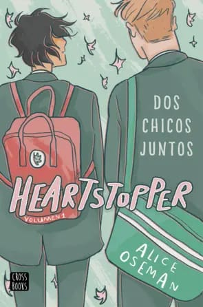

Nuestros Libros más leidos y recomendados

DESDE SUS TRAZOS ROJOS
NO es una historia de amor, es la historia de un lienzo blanco, y la tinta roja que le da vida. Clara es una chica extraña que ama dibujar. Ella se ha refugiado y defendido de la vida desde que tiene memoria a través de sus trazos en un lienzo o en el papel. Clara vive y se abstrae a través de su arte, y mira el mundo y las personas en colores y texturas. Javier es un hombre maduro, viudo, padre de tres hijas y escritor. La muerte de su amada esposa al nacer su pequeña hija dejó a su familia desolada y a él en un rincón donde es obligatorio cuestionarse todo. ¿Qué es lo que sucede después del amor?

FRUTOS DE RUBI
Este es un relato claro y sin tapujos de la vida de una lesbiana, lleno de ternura y vida auténtica, los problemas que se tienen que pasar por esta situación de preferencias, Desde la niñez, con sus paddres adoptivos, hasta su plenitud sexual y humana como mujer y como lesbiana orgullosa de serlo, páinas que nos acercan con facilidad y emoción al misterio de la personalidad de una mujer. ni peor ni mejor simplemente con ternura, erotismo sin mal usto y una gran sensibilidad son los inredientes de esta gran novela reveladora....

ANTES DE DICIEMBRE
Para Jenna Brown, su primer año en la universidad supone alejarse de su familia y de sus amigos y enfrentarse al mundo por primera vez en su vida. Su novio le ha dejado claras sus intenciones: a partir de ese momento, tendrán una relación a distancia y abierta. Ambos podrán actuar como quieran porque saben que se quieren el uno al otro. ¿Habrá algún problema si deja acercarse al mejor amigo del novio de su compañera de habitación?

HEARTSTOPPER 1
Dos chicos se conocen. Se hacen amigos. Se enamoran. ¿Por qué nos empeñamos en hacer complicadas las emociones más sencillas? Esta historia de amor entre dos chicos, uno de ellos declaradamente homosexual y el otro en vías de autodescubrimiento, nos recordará que hay primeros amores frágiles como el cristal y memorables como el diamante

REGINA EL 2 DE OCTUBRE NO SE OLVIDA!!
La protagonista de Regina une la herencia cultural mexicana con la alta espiritualidad del Tíbet, para relacionar los acontecimientos políticos y revolucionarios de 1968 con deidades prehispánicas, tibetanas y católicas. La edición definitiva de un clásico moderno, que constituye el testimonio del autor acerca de Regina, un avatar que une la herencia cultural mexicana con la alta espiritualidad del Tíbet.